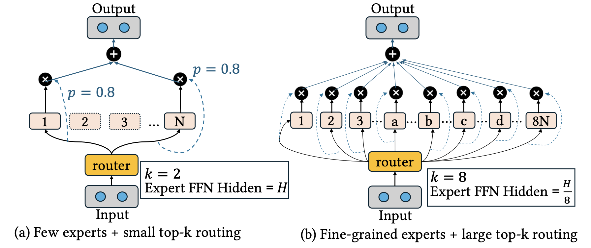
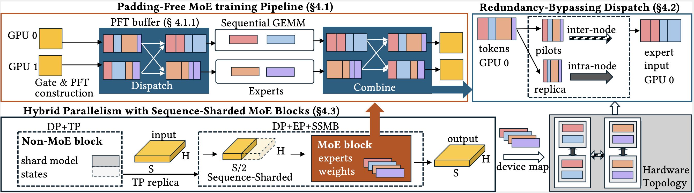
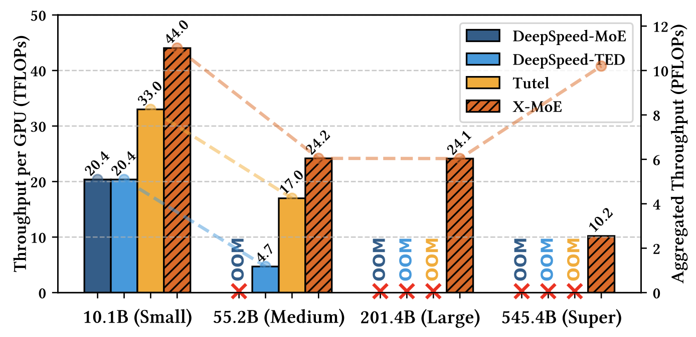

News
2025-06-26: X-MoE has been accepted at SC 2025 and received Best Student Paper Nomination! 🎉
Expert-specialized Mixture-of-Experts (MoEs) represent a significant advancement in large language models, employing fine-grained experts with large top-k routing to enhance expert specialization. However, training these emerging MoE architectures poses significant challenges for existing off-the-shelf MoE training solutions, especially on heterogeneous HPC platforms. These challenges include inefficient cross-platform kernels, shifted memory bottlenecks from model parameters to activations, and expensive all-to-all communication on hierarchical networks.
To address these issues, we present X-MoE, a comprehensive training system designed specifically for expert-specialized MoEs on HPC platforms. X-MoE introduces three key innovations: (1) a padding-free sparse MoE training pipeline with cross-platform kernels that eliminates zero-padding overhead, (2) a hierarchical redundancy-bypassing dispatch algorithm that reduces communication redundancy on hierarchical networks, and (3) a hybrid parallelism strategy with sequence-sharded MoE blocks that addresses the shifted memory bottleneck. Our evaluation on the Frontier supercomputer demonstrates that X-MoE enables training of models up to 545B parameters on 1024 AMD GPUs—10× larger than existing solutions—while achieving up to 1.42× higher training throughput.
Mixture-of-Experts (MoE) models have emerged as a powerful approach to scale neural networks efficiently by activating only a subset of parameters during inference. Traditional MoE architectures typically employ coarse-grained experts with relatively large hidden dimensions and small routing values (e.g., top-2), where each expert handles diverse types of inputs.
In contrast, expert-specialized MoEs represent a paradigm shift toward more fine-grained expertise. These architectures feature:

Recent models like DeepSeek-v3 and Qwen3-MoE have demonstrated the effectiveness of this approach, achieving superior performance while maintaining computational efficiency. However, this architectural shift introduces significant new challenges for training systems:
Existing MoE training frameworks rely on dense, CUDA-specific implementations that are inefficient for expert-specialized MoEs and difficult to port to non-NVIDIA platforms, leading to inflated memory usage and degraded performance.
As expert-specialized MoEs increase the number of routed experts and shrink expert hidden dimensions, per-device memory bottlenecks shift from model parameters to activations, particularly in the dispatch and combine stages.
Expert-specialized MoEs increase the number of routed experts per token, leading to significant communication duplication. On HPC platforms with hierarchical networks, this results in inefficient use of inter-node bandwidth.

X-MoE introduces PFT (Padding-Free Token buffers), a novel sparse data structure that eliminates zero-padding through MoE computation and communication stages. Cross-platform Triton-based kernels handle sparse and irregular workloads efficiently.
A hierarchical multi-stage dispatching process that eliminates redundant inter-node communication by using pilot tokens and local replicas, reducing communication overhead by up to 52.5%.
A hybrid parallelism strategy that combines tensor-slicing with sequence-sharded execution for MoE blocks, reducing activation memory by a factor of the TP group size while maintaining compatibility with standard MoE routing.

We evaluate X-MoE on the Frontier supercomputer using up to 1024 AMD MI250X GPUs , on DeepSeek-style MoE models (Small, Medium, Large, Super model configurations are created with reference to DeepSeek-MoE, v2 and v3). Our results demonstrate significant improvements in both model scale and training efficiency:
🔧 Integration: X-MoE is built on top of DeepSpeed, which is compatible with the DeepSpeed-Megatron training options.
@article{xmoe2025,
title = {X-MoE: Enabling Scalable Training for Emerging Mixture-of-Experts Architectures on HPC Platforms},
author = {Yuan, Yueming and Gupta, Ahan and Li, Jianping and Dash, Sajal and Wang, Feiyi and Zhang, Minjia},
journal = {Proceedings of the International Conference for High Performance Computing, Networking, Storage and Analysis (SC '25)},
year = {2025},
}